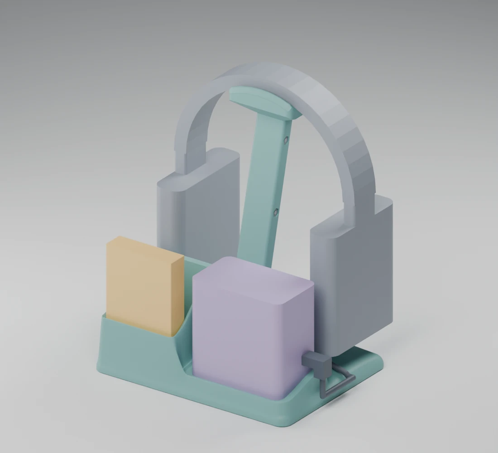
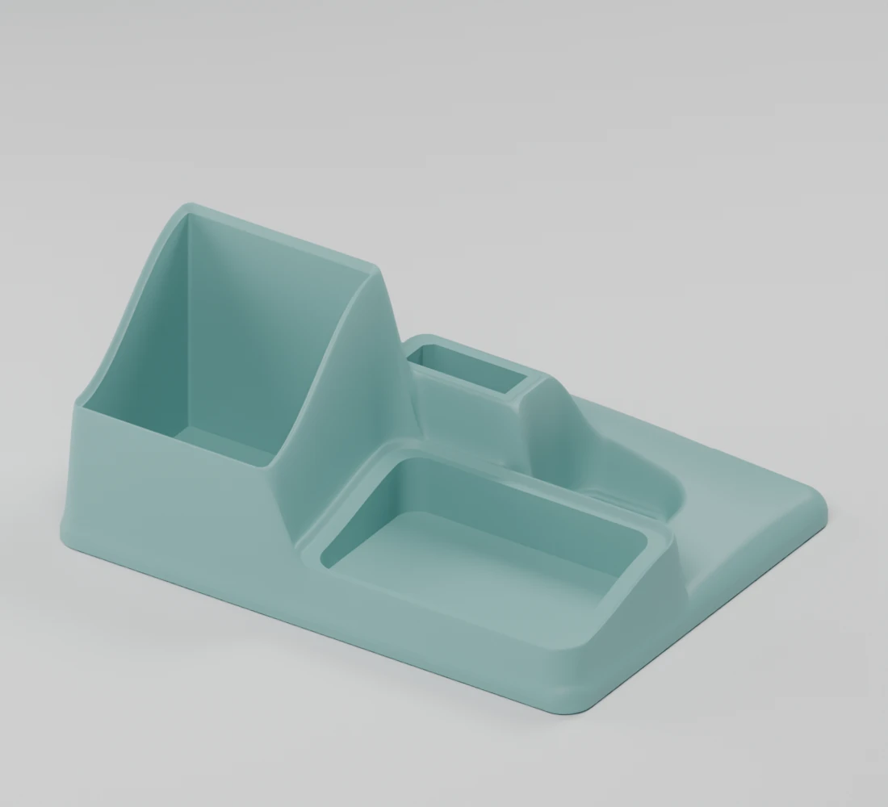
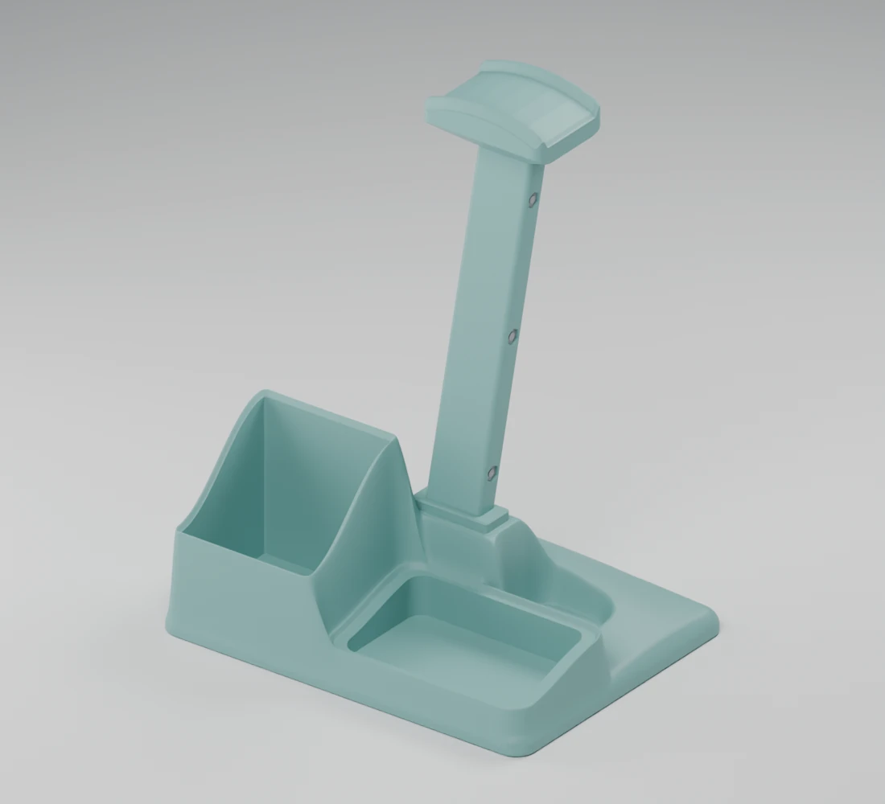
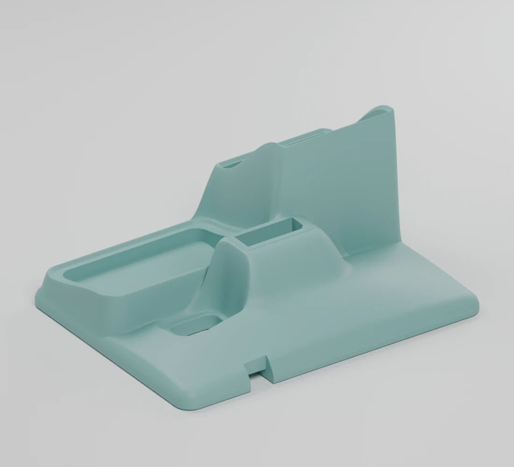
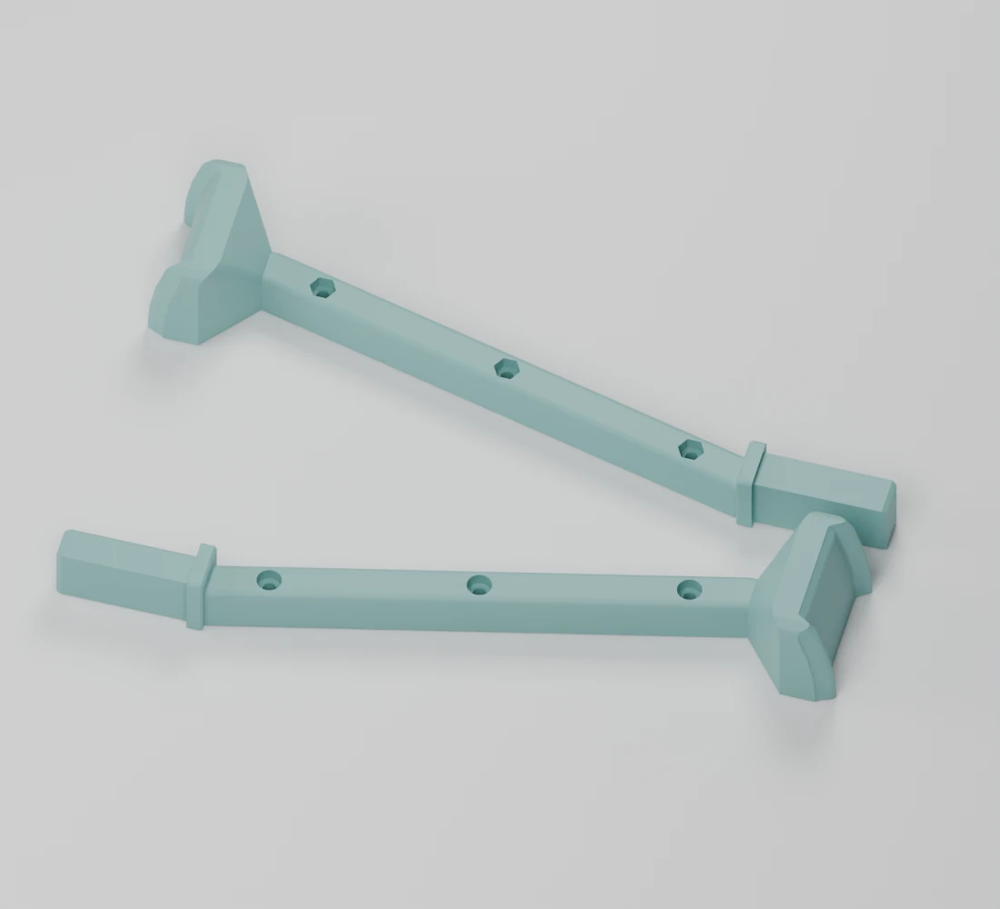

A 3D-printed listening nook
A little home
for big stories.
The player. The cards. The headphones.
All together, in one soft little spot.
A compact charging dock for a Yoto Mini in its Adventure Jacket, roughly 20 loose cards, and kids’ headphones.
Make room for storiesW0.1 print candidate · still taking shape

Favourite stories, left.A pocket for roughly 20 loose cards.
Little player, right.Shaped around the Adventure Jacket.
Headphones, up above.A centered mast behind the pockets.

Soft shape. Thoughtful little spaces.
One base.
A whole little
landscape.
Rounded shoulders flow from pocket to pocket, around the stand socket, and out to the edges. A jelly-like shape with a flat underside for printing.
A closer look
Little details,
all connected.
The shape brings everything together.
The build keeps the parts simple.

Everything has its place.
Cards face forward, the player sits alongside, and the curved headphone saddle rises behind them.

Two leads. One passage.
A shared route for the player and headphone USB-C leads. Each device is plugged in manually.
Actual CAD renders throughout. Device and cable envelopes illustrate the intended arrangement; they do not establish real fit.
From a little idea to your print bed
Make a Perch.
Three printed parts, a few screws,
and a home for the next story.

One sculpted base + two mast halves.
W0.1 · Print candidate
Download print filesComplete ZIP: the three main parts, fit samples, assembly guide, previews and geometry checks.
PrintPLA · 100% scale
Bambu X1C · 0.4 mm nozzle
Join3 × M3×20 socket-cap screws
3 × M3 hex nuts · 2.5 mm hex key
A little place.
A lot of imagination.